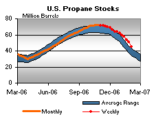

Released on February 7, 2007
(Next Release on February 14, 2007)
Understanding the Context
Later tonight, the U.S. men’s soccer team will take on their Mexican counterpart. On the surface, the match is called a “friendly” in the soccer community, which means that it is not a qualification game that will determine if one country or the other advances in any international competition. However, when these two neighboring countries meet in any soccer game, the competition is intense, as each team wants to show its supremacy over the other, which is why both teams are recalling players who are playing on club teams overseas. Without understanding the underlying context for the match, any analysis of the outcome might be flawed. Similarly, without understanding changes in gasoline markets over the past year, oil market watchers could easily misunderstand recent finished gasoline inventory data, especially when comparing to year-ago levels. Some oil analysts have already noted that gasoline blending component stocks make up a much larger share of total gasoline stocks than a year ago. This observation has led some analysts to ask whether some structural shift in the market has caused this to happen. The answer is an unequivocal “Yes.”
It is important to remember that, a year ago, some parts of the country were using reformulated gasoline, or RFG (a cleaner burning gasoline required in many urban areas) that contained Methyl Tertiary Butyl Ether (MTBE), while other areas used RFG that contained ethanol. RFG with MTBE could be blended at the refinery and moved through the pipeline system, and as such, could be stored for use later. Thus, in EIA statistics, inventories of this gasoline could be measured by looking at the volume of finished RFG stocks. However, because of ethanol’s propensity to mix with water, most terminals do not store finished RFG mixed with ethanol, but instead, store the ethanol separately from the base gasoline components to which it will be added. Ethanol stored separately is not counted as a part of gasoline inventories at the terminal. This ethanol is added as delivery trucks are filled to take the gasoline to retail outlets, but EIA inventory data do not include volumes stored at retail stations.
By early May 2006, virtually all RFG contained ethanol, as refiners opted to cease adding MTBE to gasoline, as they perceived the potential for increased liability exposure due to the elimination of the oxygen content requirement for reformulated gasoline (RFG) included in the Energy Policy Act of 2005. As a result, making comparisons now to data a year ago can be problematic if total gasoline inventories are not used in the comparison. As the graph below illustrates, a year ago, a significant portion of gasoline inventories was comprised of finished RFG (the red area). But the gasoline supplying RFG markets now is mostly RBOB (reformulated gasoline blendstocks for oxygenate blending), which is the base gasoline that is blended with ethanol to make RFG. This shift from finished RFG inventories to RBOB can be seen by looking at the actual data as well. Finished RFG inventories measured 23.7 million barrels a year ago and currently stand at 1.5 million barrels, a decline of 22.2 million barrels. However, RBOB for blending with alcohol (RBOB that is intended to be blended with an alcohol, which is almost always ethanol) inventories rose from 24.6 million barrels a year ago to 45.1 million barrels now, an increase of 20.5 million barrels, which is very similar to the decline seen in finished RFG inventories. This illustrates how similar RFG inventories are to year-ago levels. It’s just that they are now counted in the form of RBOB, a blending component, rather than finished RFG.
Additionally, current RFG inventories may well equal or surpass year-ago levels since ethanol blending has increased. Year-ago finished RFG stocks contained about 11 percent MTBE. RBOB stocks today, do not contain the 10 percent ethanol stocks that will be added to produce the gasoline sold at retail. Furthermore, EIA’s data does not directly measure all ethanol stocks. In other words, in comparison to a year ago, more ethanol is being added to the U.S. gasoline pool, making overall gasoline supplies slightly higher than EIA’s gasoline inventory data would suggest. However, EIA’s gasoline production and product supplied data do include the added ethanol volume. The budget proposal for fiscal year 2008 that was sent to Congress earlier this week includes resources that would enable EIA to more fully incorporate ethanol in its weekly petroleum statistics.
Residential Heating Fuel Prices Increase Simultaneously
Residential heating oil prices increased with the period ending February 5, 2007. The average residential heating oil price rose by 5.3 cents per gallon last week to reach 241.3 cents per gallon, a decrease of 3.4 cents from this time last year. Wholesale heating oil prices gained 10.0 cents to reach 176.8 cents per gallon, a decrease of 2.2 cents compared to the same period last year.
The average residential propane price increased by 1.2 cents, reaching 200.8 cents per gallon. This was an increase of 0.8 cent compared to the 200.0 cents per gallon average for this same time last year. Wholesale propane prices rose by 3.4 cents per gallon, from 99.1 to 102.5 cents per gallon. This was an increase of 1.8 cents from the February 6, 2006 price of 100.7 cents per gallon.
Retail Gasoline and Diesel Prices Both Increase
After five consecutive weekly declines, retail gasoline prices were up for the week of February 5, 2007, rising 2.6 cents to 219.1 cents per gallon. However, prices are still 15.1 cents per gallon lower than at this time last year. East Coast prices were up 0.1 cent to 216.6 cents per gallon. In the Midwest, prices rose 6.2 cents to 214.3 cents per gallon. Gulf Coast prices were up 2.8 cents to 204.5 cents per gallon, while Rocky Mountain prices rose 0.3 cent to 212.3 cents per gallon. Prices for the West Coast were up 1.7 cents to 247.8 cents per gallon, the same price as this time last year.
After seven consecutive weekly declines retail diesel prices increased 2.2 cents to 243.5 cents per gallon. Prices, however, remain 6.4 cents lower than at this time last year. East Coast prices rose 2.7 cents to 243.3 cents per gallon. Midwest prices jumped 2.8 cents to 237.7 cents per gallon, while the Gulf Coast saw an increase of 1.3 cents to 236.0 cents per gallon. The only region to see a decrease was the Rocky Mountains, with prices falling 3.3 cents to 252.3 cents per gallon. Prices on the West Coast saw an increase of 3.3 cents to 272.0 cents per gallon. Prices there are still 7.5 cents per gallon higher than at this time last year.
Propane Weekly Stockdraw Near Record
Frigid temperatures over many parts of the Midwest and East Coast contributed to propane inventories plunging lower by a near-record 6.2 million barrels last week, a sharp contrast to the more modest stockdraws seen during the first half of the winter heating season. Last week’s drawdown is the third largest weekly draw ever recorded by EIA, ranking behind a 6.7-million-barrel draw the week ending January 31, 2003 and a 6.5-million-barrel draw during the week ending January 15, 1999. With some of the most severe weather occurring in the Midwest last week, the region reported the largest weekly decline in propane inventories amongst all regions, measuring 3.2 million barrels. This was followed by the Gulf Coast region with a drop of 2.3 million barrels last week. The East Coast region posted a weekly decline in inventories of 0.5 million barrels, while the combined Rocky Mountain/West Coast region moved lower by 0.2 million barrels. Propylene non-fuel use inventories moved higher last week by 0.2 million barrels and accounted for a 7.9 percent share of total propane/propylene inventories. The prior week’s propylene non-fuel use share was 6.6 percent.
Text from the previous editions of “This Week In Petroleum” is now accessible through a link at the top right-hand corner of this page.
| Retail Prices (Cents Per Gallon) | |||||||
| Retail Data | Changes From | Retail Data | Changes From | ||||
| 02/05/07 | Week | Year | 02/05/07 | Week | Year | ||
| Gasoline | 219.1 | Heating Oil | 241.3 | ||||
| Diesel Fuel | 243.5 | Propane | 200.8 | ||||
| Spot Prices (Cents Per Gallon) | |||||||||||||||||||||||||||||||||||||||
|
 |
||||||||||||||||||||||||||||||||||||||
| Stocks (Million Barrels) | |||||||
|  | |||||||
| Stocks Data | Changes From | Stocks Data | Changes From | ||||
| 02/02/07 | Week | Year | 02/02/07 | Week | Year | ||
| Crude Oil | 324.5 | Distillate | 136.3 | ||||
| Gasoline | 227.2 | Propane | 45.296 | ||||